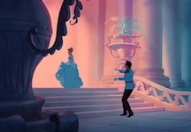

Cinderella
Summary
Disney's Cinderella follows the story of a young girl who is mistreated by her stepmother and two stepsisters following the death of her father. The King of the Kingdom hosts a ball to find his son, the Prince, a wife. Cinderella's stepfamily prevents her from attending the ball by assigning her difficult tasks and ruining her dress. In her moment of despair, Cinderella's Fairy Godmother appears. With her magic wand and a few bibbidi-bobbidi-boos later, Cinderella with a new dress, carriage and coachmen headed off to the ball. Catching the Prince's attention, Cinderella dances with him. But soon after the clock strikes midnight and Cinderella had to escape, leaving one of her glass slippers behind. The Prince, determined to find the girl he danced with, sends the Grand Duke with the lost slipper to all the eligible maidens in the kingdom to find the one who can fit into the slipper. While the stepsisters are unable to fit into the slipper, Cinderella is able to smoothly slip into the glass slipper. Having found the one, the Grand Duke takes Cinderella to the castle where she marries the Prince and lives happily ever after.
Key Moment
The Fairy Godmother's magic is only able to last until midnight. Therefore, shortly after Cinderella danced with the Prince, when the clock tower rang signaling it was midnight, Cinderella had to escape. She runs away from the Prince, unable to give him an explanation behind her sudden departure in such a short time frame. Once she returned home, the magic disappeared, leaving Cinderella in her tattered dress. But, the glass slipper that was still on her foot remained. The glass slipper will later play a crucial role in helping identify her as the one the Prince had danced and fallen in love with.